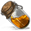
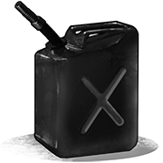
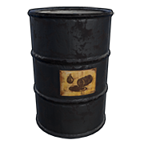
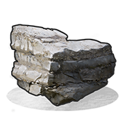
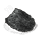
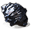

Серная руда
Серная руда - ресурс, который можно добыть на местности или на карьерах. На местонсти серные камни чаще встречаются в биоме "Зима".Также добыть серную руду можно на серном или гигантском карьере с помощью дизельного топлива.

В игре Rust много различных видов ресурсов. Вот все виды:
Серная руда - ресурс, который можно добыть на местности или на карьерах. На местонсти серные камни чаще встречаются в биоме "Зима".Также добыть серную руду можно на серном или гигантском карьере с помощью дизельного топлива.
Сера - ресурс, который предназначен для создания пороха, взрывчатки, гранат, мин, фейверков и сигнальных шашок. Можно получить при переплавки серной руды.

Металлические фрагменты выплавляются из железной руды и применяются во многих рецептах. Можно получить при переплавке металлической руды, переработке компонентов, добыче обломков транспорта, торговле, поиске металлодетектором, копании гигантского карьера, ивентах.

Ресурс, который можно получить при добыче металлической жилы.
Побочный продукт горения дерева, применяемый в изготовлении пороха.

Дерево. Собирается с деревьев, используется во многих рецептах. Необходимо для приготовления еды. Можно добыть при переработке, торговле, ивентах.
Металлолом можно использовать в столе для исследований или в верстаках для разблокировки и исследования чертежей предметов. Часто используется в качестве валюты. Можно добыть при лутании, переработке, поиске металлодетектором, выполнении миссии, потрашении продуктов.
Топливо низкого качества, используется для питания источников света. Можно получить при плавке нефти, переработке, лутании, разгрузке вагонов, копании карьера, торговле, крафте и ивентах.
Ткань, полученная с животных, конопли, переработки или торговли. Используется при создании многой одежды, оружия и прочего.
Кожа, добытая с животного или с переработки. Используется при создании множества видов одежды и не только.
Жир, добытый с животных. Скомбинируйте с тканью для получения топлива низкого качества.
Сырая нефть из недр земли, должна быть переработана в топливо низкого качества.
Требуемое топливо для работы экскаватора. Можно подобрать или купить.
Добывается из горной породы, используя инструменты. Основной строительный материал.
Сделан из серы и угля, является ключевым ингредиентом для всего, что взрывается!
Основной компонент, используемый при создании ракет и взрывчатки.

Руда, содержащая высококачественный металл. Может быть переплавлена в печи.
Металл высокого качества, применимый для изготовления брони и оружия.

Помогает растениям за счет улучшения состояния почвы. Производится в компостере.

Свежий и плодородный. Используется для изготовления удобрений.
Ресурсы, предназначенные для изготовления почти всего.